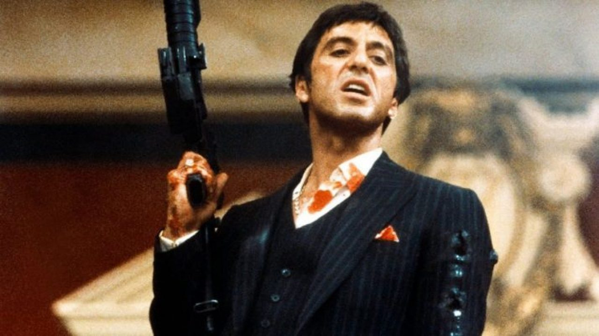

Tony Montana

"All I have in this world is my balls and my word, and I don't break 'em for no one!"
"You don't have the guts to be what you wanna' be! You need people like me so you can point your f***in' fingers and say, 'That's the bad guy!'"
"Okay, here's the story. I come from the gutter. I know that. I got no education, but that's okay. I know the street, and I'm making all the right connections. With the right woman, there's no stopping me. I could go right to the top."
First image of Tony Montana (taken before his death)
Tony Montana sitting at his desk
An artwork of Tony Montana
The last image of Tony Montana